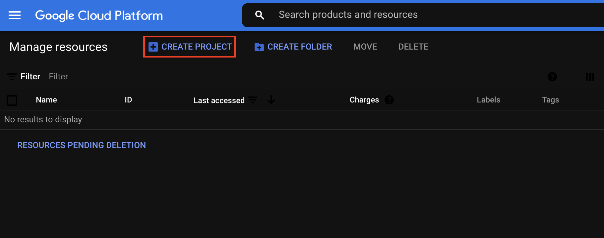
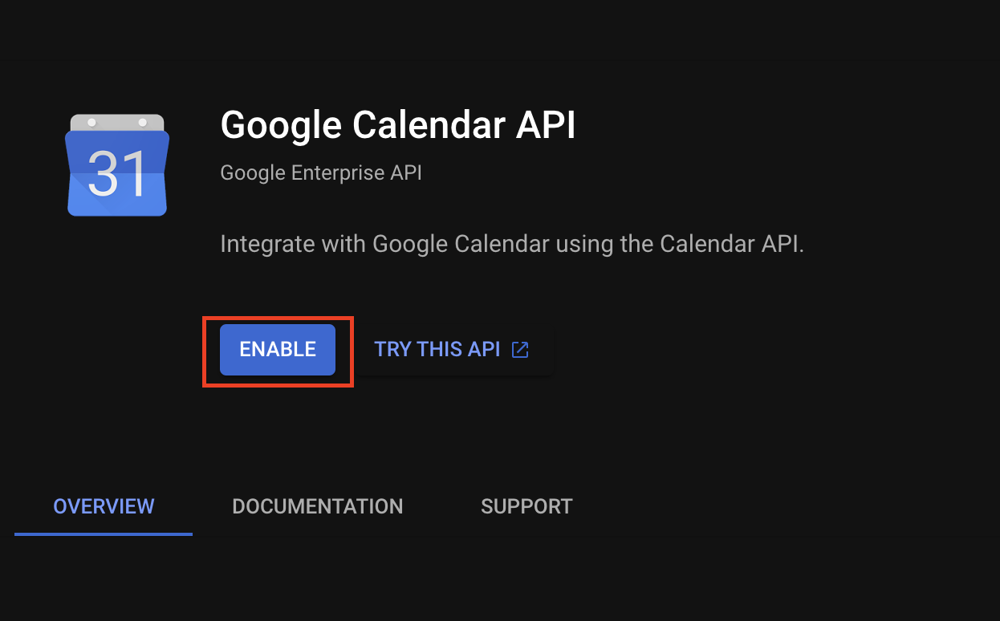

Blog home »
Seminar Calendar Tutorial
May 28, 2023
In my early years as a PhD student at UW, James Lee revamped the theory website into its current glorious state. One of the coolest things (in my opinion) about this website is the list of upcoming "theory talks" right at the top. Date, speaker, title. And if you click on it, you get an abstract and location. The most beautiful part? This is actually a google calendar, so (1) you can subscribe to it, if like me, you can't function without everything on your calendar, and (2) it's all updated just be editing the calendar—no need to modify the website itself and push changes. If a student is in charge of the seminar, you can just share calendar editing privileges with them for the semester.
I've since been at Columbia and BU and copied the general idea of this extremely useful and informative website, adding this calendar to both. A very long time ago, James suggested that maybe if we ever had time, we could make a guide so others knew how to do this. In honor of James initially setting up this infrastructure, here we go.
The first step is to embed the google calendar using javascript. James's original calendar code as the following link (and note that he wrote it in a single pass, and it's not particularly responsive e.g. on mobile devices, so please feel free to improve on it):
http://theory.cs.washington.edu/js/cal.js
Quoting what James initially told me, "It produces (dynamic) HTML in a fairly straightforward way, except that for the "accordion" effect, it using bootstrap. (Bootstrap is a light-weight CSS framework designed to dynamically adjust to different media types.) There are a few weird hacks in there, like if an event is "full day" (no specified start time) then Google often gets the day wrong when it tries to interpret the start date in the local time zone, and I found that adding 1HR to the start time fixes most issues."
The more difficult part is in obtaining a clientID and an API Key from google, and you may want to create a new Google login for this purpose. The following instructions are based originally on the following article, but have been updated with my more recent experience, as Google's interface as been updated. I last did this about a year ago, so I apologize if it's out of date again.
How to get an API Key:
Sign in to your Google account. Go to https://console.developers.google.com/project and click "Create Project."

Enter a project name—you don't need to change anything else. For this example, I'm using "BU-theory-cal"
Click "Create" and then wait for the project to be created. When it's done, you should see a notification badge at the top right of your screen. Click on the project from here.
Scroll to the bottom of the page and click "Explore and enable APIs."
Click "Enable APIS and Services."
Click in the Search field and type "Calendar."
Click the "Google Calendar API" from the search results.
Click the "Enable" button.

Click the "Credentials" link on the left.
Click "Create Credentials."
Click "OAuth client ID."
Click "Configure Consent Screen."
Check "External" and click "Create."
Fill in your app information—this will not wind up being visible to anyone, so it is not really important.
The domain needs to be private (not .edu or .org) and top level, so use a domain owned by you or someone on your team. This is not where the calendar needs to be hosted.
Click "add or remove scopes."
We'll add a single API scope found on the third page that just has "See the events on public calendars"—check this one and add.
Go and click the "Create credentials" button again, and from the dropdown, you should now be able to click API key
An API key will be generated. Enter a new name in the "Name" field. For example I am using "BU Calendar API key 1." In the "Application restrictions" section, click "HTTP referrers (web sites). In the referrers entry field, you can restrict to your website, e.g., I restrict to *.bu.edu/* to restrict to only websites on BU's domain.
Under API restrictions, click "Don't restrict key" and then click "save."
Your API key has been created now, and you need to copy it so you can install it.
Click the copy icon next to the API key to copy it to your computer's clipboard.
Creating a client ID:
Now we'll create an OAuth client ID. Go to "Create Credentials" one last time and select "OAuth client ID" from the drop-down this time.
Select "Web application" under "Application type" and give it a name—I've chosen "BU Calendar Web client 1." Add in the base url of your domain, which for me is https://www.bu.edu despite the fact that I will actually use it at a lower level of the domain.
Click "Save."
Your OAuth client ID has also been created—again click the copy icon next to the OAuth client ID to copy it to your computer's clipboard.
Finishing Up:
You will also need your google calendar's ID. To do that, give the relevant Google account admin access to the calendar. Go into Google Calendar, look under "My Calendars" on the left, and click on the three dots beside the calendar you want. Go to "Settings and sharing." If you scroll down, you will see the "Calendar ID." That's what goes in the clientID variable in the code.
(From here, you can also ensure that the calendar is visible to the public, and that appropriate people have write access to add events.)
If you did all that, the calendar code should now work (but only on the website you allowed for with the APIkey, and only live). It's okay that the clientID and APIkey are world-readable. Then just allow read access to the (public) calendar.